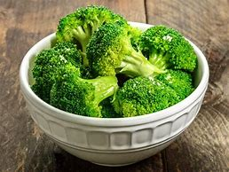

Steamed Broccoli Recipe

Description
This will show how to make wonderful steamed broccoli
that will taste amazing!
Ingredients
- 1 Head of Broccoli
- 1 tbsp Butter
- 2 Slices of Bacon
- Salt
- Pepper
Steps
- Chop the head of broccoli into florets
- Place a steamer into a saucepan and cover with some water
- Once boiling, add broccoli and cook for 3-5 minutes
- Add bacon to a cold pan and cook on medium heat
- Chop bacon into small bits
- Toss bacon, broccoli, butter, salt, and pepper in a bowl